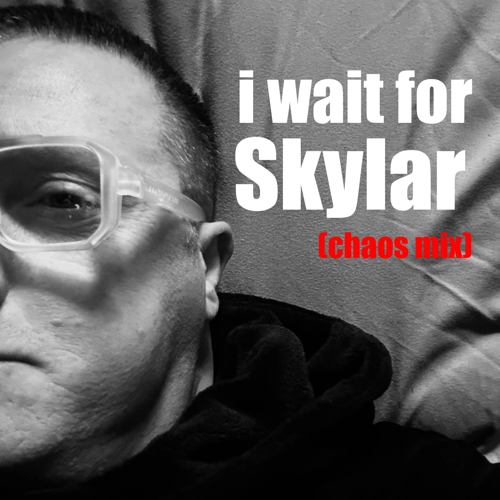
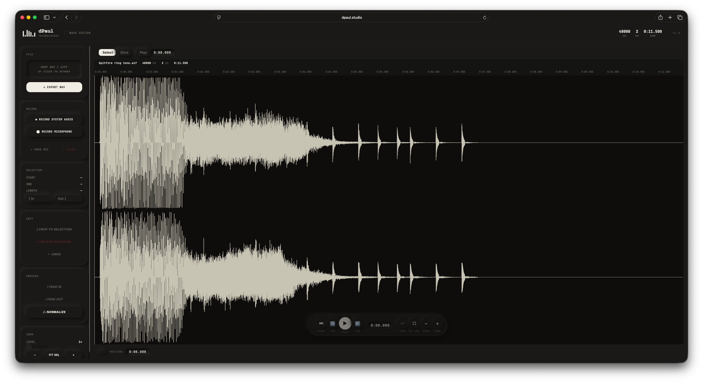

What I've been
working on.
A running log of what's happening in the studio — day by day. Design work, client outreach, product launches, tools built. No polish, just progress.
New track out — I Wait For Skylar (Chaos Mix). A dance cut built around a bassline pulled straight from a 90's Korg M1 — that unmistakable slap bass patch that soundtracked a whole era of house and dance records, now driving something new.

A week in the making, from first sketch to finished mix. Out now on iTunes, YouTube Music, and all the leading streaming platforms.
Released dPaul WebP Converter v1.6 — a native Mac app for batch converting images to WebP. Drop in a folder of PNGs or JPEGs, set a quality level, and convert the lot in seconds. Fully offline, nothing leaves your Mac.
WebP files are typically 25–70% smaller than PNG or JPEG at the same visual quality — faster sites, better Core Web Vitals, higher Google rankings. Built for Apple Silicon M1–M4, requires macOS 12 or later.
Free to download on the desktop tools page.
New browser tool in development — Wave Editor. A no-install audio editor that runs entirely in the browser. Drop in a WAV or AIFF file, edit it, and export it — no account, no upload to a server, everything stays local.

Waveform display with zoom and scroll, draggable selection markers, fade in/out, normalise, crop, delete, and undo. Floating transport bar with play, stop, loop, and seek. Mic and system audio recording built in. Export to WAV when done.
Currently at v1.8. Coming to the tools page shortly.
Finished and published the Dream Three promo video for Carbonography — the vehicle merch platform coming later this summer. The concept: pick your dream three vehicles and wear them on a hoodie, t-shirt, or cap.
The three vehicles in the film are my son Logan's dream three: an R34 Skyline GT-R, a classic Datsun, and an MV Agusta F4 RR. His machines, his statement.
Cut in Premiere Pro. Video on the video page — carbonography.co.uk is where it'll launch.
Released the DP-ONE MKVI — the browser synthesiser is now a proper standalone Mac application for Apple Silicon. Three synth engines, seven-track drum sequencer, dual bass sequencer, full filter bank, effects chain, pitch wheel, and USB MIDI keyboard support. Routes into Logic Pro or Ableton via BlackHole. Free to download.
HTML‑Live is now available as a universal DMG — a single native Mac app that runs on both Intel and Apple Silicon. Built with Electron, packaged and uploaded to Gumroad today.
Includes a File System folder browser sidebar, a Git command reference panel, and companion shell scripts. One-off payment, no subscription, free updates.

Testing on DUPE REMOVE is complete. What started as a browser-based duplicate image detection tool has gone through a significant overhaul — the colour scheme has been refined, the interface tightened up, and a stack of new functionality added based on real-world use during the testing phase.
It's now a full native Mac application. Download, install, run. No browser required, no demo password, no limitations on session size. The perceptual hashing engine, group review system, adjustable sensitivity, and export pipeline are all there — just faster, cleaner, and properly packaged.
Available now. 30-day trial included, no credit card required.

A fresh wave of designs has landed in the merch store. The collection has been building quietly in the background — each piece designed in-studio, rooted in the same aesthetic that runs through everything here. Cars, culture, precision engineering. Things worth wearing.
New additions include the Porsche 993 — Air-Cooled Architecture, the Bugatti Veyron with its full technical specification sheet on the reverse, the dPaul.studio Lambo, and the clean dpaul logo tee for those who prefer to keep it minimal. More designs will be dropping weekly — the pipeline is full and the press is running.


Applied for a role at Red Bull. The process itself was a reminder of something worth saying out loud: if you want to actually enjoy what you do next, find a company whose culture and expectations align with yours — not just another corporate role for the sake of it. That's the filter I'm applying going forward. Only those.
One of the application questions was "What makes you tick?" — which is exactly the kind of question a brand like that would ask, and exactly the kind that deserves a proper answer rather than a paragraph of buzzwords. So I made an ad instead. It says everything.

Completed Perfect Day — an animated short built entirely from static assets, brought to life through precision keyframing in Adobe Premiere Pro. The film follows a lonely plush carrot character overwhelmed by sadness and isolation. A small group of friendly peas arrives, escalating into an elaborate circus celebration — The Pea-Tacular Show — before closing on a warm embrace between the carrot and a pea, underscored by Lou Reed's "Perfect Day".
Every character is a static PNG, isolated and edge-refined in Photoshop before import. The illusion of movement comes entirely from keyframed Position, Scale, and Rotation values — fractions of a degree of rotation to simulate a natural sway, velocity curves eased in and out to give the carrot's body language genuine emotional weight.

Most of this studio log gets written from a Black Sheep Coffee in Windsor. There are two of them within a short walk of each other — and I rotate between both depending on the day. Always clean, always good coffee, and the staff are genuinely warm every single time. It's one of those places that makes working away from a desk feel less like a compromise and more like a deliberate choice.
If Black Sheep are ever looking for a Creative Technologist — for anything from digital tooling to brand content — I'm based in Maidenhead, I'm available, and I'd back myself to add something worth having.
Spent the past week getting deep into Adobe Acrobat Pro — specifically learning the tools used to produce official, compliance-grade documents. This is a different discipline from web or print design: documents that have to meet specific criteria, follow formal conventions, and hold up under scrutiny.
Two techniques have been the main focus. The first is OCR — Optical Character Recognition — which allows scanned or image-based PDFs to become fully searchable and selectable documents.
The second is Bates numbering — the sequential stamping system used in legal, medical and corporate document management to uniquely identify every page across a set of files. Another area of the craft that doesn't get talked about much in creative circles, but matters enormously when documents have to do serious work.
DUPE REMOVE is now in final testing — a browser-based utility built to clean up duplicate content fast, without sending your data anywhere. Paste in any block of text and the tool immediately identifies and strips repeated lines, leaving only unique entries. No server, no upload, no account — it runs entirely in the browser.
The tool handles a few things that make it genuinely useful in practice: case-insensitive matching so "Apple" and "apple" are treated as the same, whitespace normalisation so stray spaces don't cause false misses, and a blank line filter option to strip empty lines at the same time. Output order is preserved — first occurrence wins, everything after is dropped.
There's a live duplicate count displayed as you work, a one-click copy to clipboard button, and a clear/reset control. Designed for speed — the kind of thing you keep in a tab for whenever a messy CSV, a copied list, or a scraped data dump needs a quick clean.

// Update — 18 May 2026
Came back to DUPE REMOVE this week and started pushing it beyond its original text-cleaning purpose. Currently in testing: a built-in image rotation tool and a crop utility designed to convert portrait 5×7 images directly to either 16:9 or 9:16 aspect ratios — without leaving the browser, without third-party software, without the back-and-forth.
The use case is straightforward — portrait shots taken for one context need to be repurposed quickly for landscape video thumbnails or vertical social formats. Having rotation and ratio-specific cropping baked into the same tool that's already open on the desk saves a round-trip to Photoshop for what is fundamentally a mechanical task. Still in testing, but the core logic is working.
Launched a new website for Citiit Limited — citiit.uk. The site features a collection of London photography I've taken over the years — cityscapes, architecture, street scenes — woven into the design as a visual backdrop to the brand.
One of the standout features is an animated computer screen displaying scrolling code — a nod to the technical roots of the business. Built entirely in-browser, no video files involved.
Opened the merch store — several garments now live. The designs are all rooted in the Kraftwerk Techno Pop album cover aesthetic. I generated an image of myself in the same graphic style and used that as the central design feature across the T-shirts, rotating the head image at different angles using Photoshop's image rotation tool, currently available in beta.
Also launched an Apollo 11 T-shirt. The design uses one of the latest Artemis programme high-quality images as a base, and I generated an image of the Lunar Module (LM) docked to the Command Module (CM) floating above the Moon's surface — a nod to the 1969 historic mission and the first man on the Moon. There will be plenty more retro and technology-themed garments coming to the shop in due course.
Took a walk around Maidenhead Town Centre and approached a couple of food van stall owners. Photographed their vans on the spot and created a caricature-style image of each while I was there — then walked up and showed the owners what I'd done. Both sounded genuinely interested in having a professional website built.
Went home, designed two separate sites from scratch, wrote up the terms and conditions, and put together a pricing structure. Emailed both of them the same evening. The whole process has been a great learning curve — getting the legal bits right, understanding what a proper client engagement looks like from first contact to proposal.
Also designed a business card which I'll be printing shortly — the design has been added to the site too.